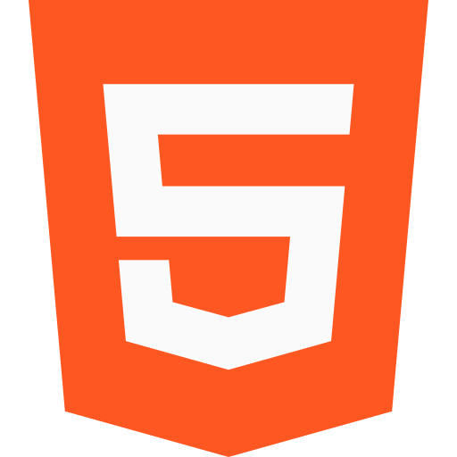

Portafolio personal
Proyecto web orientado a la creación de una landing page personal para presentar información profesional, habilidades, proyectos y medios de contacto de forma clara y organizada..
HTML y CSS
Ver portafolio
Actualmente me encuentro en formación en desarrollo de software, adquiriendo conocimientos en programación, diseño de interfaces y manejo de herramientas tecnológicas. A lo largo de este proceso he trabajado con Python, HTML, CSS y Git, aplicando lo aprendido en proyectos académicos que me han permitido comprender mejor cómo se desarrolla una aplicación, desde su estructura hasta su funcionamiento.
De manera complementaria, también me estoy formando en el desarrollo de videojuegos con Unity, explorando la programación y el diseño de experiencias interactivas. Considero que cada proyecto es una oportunidad para ampliar mis conocimientos, mejorar mis habilidades y adquirir experiencia práctica en las distintas áreas del desarrollo tecnológico.
Proyecto web orientado a la creación de una landing page personal para presentar información profesional, habilidades, proyectos y medios de contacto de forma clara y organizada..
HTML y CSS
Ver portafolio
Aplicación académica desarrollada para gestionar información relacionada con clientes, instructores, vehículos y citas, permitiendo una organización más clara de los procesos.
PYTHON y JSON
Ver codigo
Prototipo de videojuego 2D tipo endless runner en el que un pájaro recorre cables eléctricos, esquivando chispas, descargas y otros obstáculos para sobrevivir el mayor tiempo posible.
Videojuego 2D
Ver másCapacidades que he desarrollado durante mi formación y que me ayudan a trabajar, aprender y resolver problemas.
Tecnologías y metodologías que he utilizado en proyectos académicos y ejercicios prácticos.

HTML
He trabajado en proyectos académicos como DriveSafe, utilizando Python y archivos JSON para registrar, consultar y administrar información.

He utilizado Git para organizar los cambios de mis proyectos, crear commits y consultar el historial de versiones.
He participado en simulaciones de Scrum, desempeñando el rol de desarrollador y practicando la planificación de tareas, las reuniones diarias y la revisión del trabajo.
¿Tienes alguna propuesta o quieres conocer más sobre mis proyectos? Puedes comunicarte conmigo por estos medios.